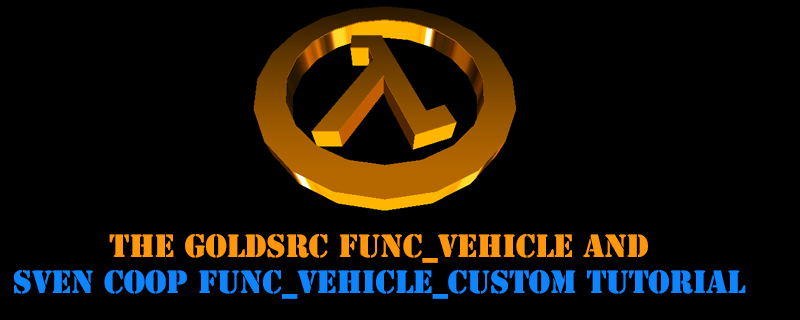
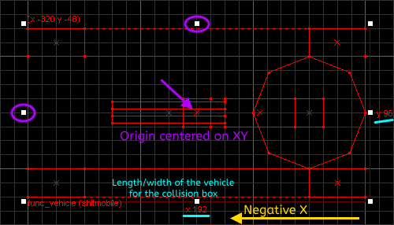
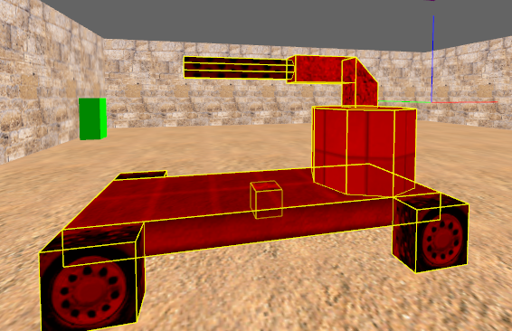
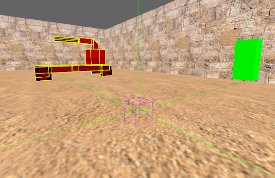
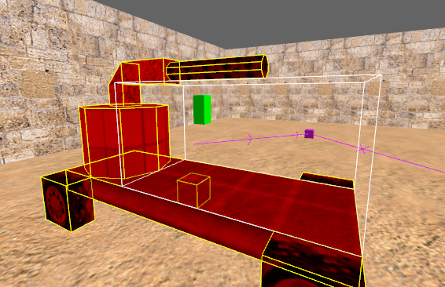

As of the 25th anniversary update, FUNC_VEHICLE is now avalible to Half-Life.
NOTE: as of this moment the FGD hasnt been updated but you can copy it from the CS1.6 FGD. Look for "func_vehicle" and "func_vehiclecontrols" for the info and copy them into your FGD if needed. This may be updated into the official sdk later. If you don't have CS1.6 fgd you can add this to your map editor: func_vehicle.fgd
This is the GoldSrc func_vehicle and func_vehicle_custom for CS1.6, Half-Life & Sven Coop. This tutorial is written by seedee and mirrored and adapted by The303.
A note before using, keep in mind that func_vehicle was always a somewhat buggy entity and has a tendancy to get stuck or get lost, so when mapping be sure that you don't make the vehicle an critical part of winning the map. Also be sure it can't be used to block and get stuck on needed exits/paths in your map. Nothing is worse than a map where all the players cannot finish due to a stuck vehicle.
Tip: When brush modelling your vehicle (before you select it all and turn it into the func_vehicle) you can also cover it in CLIP brushes to control collision & make certain brush details less likley to get stuck in. This is useful for say like motorbike models with handlebars. You can also include a wedge shape CLIP brush to help movement into the vehicle.
Jump to Creating the vehicle entity
Jump to Creating tracks for the vehicle
Jump to Creating vehicle controls
Jump to Sven Co-op scripting
The front of your vehicle is always the X-axis in the editor and therefore should be created facing the X-axis, but you can change the in-game orientation of your vehicle later. The axes should be visible as red, blue, and green lines, where Z is up in the editor.
Note that we have "Draw Sizing Info" checked in the editors 2D views option to see the brush size numbers.
Create a brush textured with ORIGIN at the exact center of your vehicle on the X and Y-axes. This will let you properly determine the length and width of the vehicle's collision box. You can use the brush selection handles as a reference for where the center of your vehicle is. The brush doesn't have to be centered on the Z-axis.


You must select all the brushes of your vehicle, including the ORIGIN brush, and assign them to a func_vehicle entity (func_vehicle_custom for Sven Co-op):
targetname
The vehicle controls need to target this entity, so set a unique name.
target
Name of the path_track entity the vehicle will spawn at in-game.
length
The dimension of the vehicle, in units, on the X-axis.
width
The dimension of the vehicle, in units, on the Y-axis.
height
This defines how many units the bottom of the ORIGIN brush is above ground. This is useful if your vehicle has wheels, is a boat, or a helicopter. While making the origin touch the ground and setting this to 0 will work, it is not an ideal solution due to the way vehicles collide with the world.
bank
This defines how many degrees the vehicle tilts when turning. This is good for motorcycles.
dmg
Damage dealt to players who get run over or otherwise block the movement of the vehicle.
speed
The speed of the vehicle, in units per second.
startspeed
The velocity of the vehicle as soon as the level loads in-game. The vehicle will immediately decelerate to a stop.
sounds
The type of sound the engine. This must be an integer ranging from 1 to 7. You can find the vehicle sounds in ../cstrike/sound/plats/
volume
The volume of the engine. This must be an integer ranging from 1 to 10.

You must create two of these entities. The first path_track serves as a spawning point for the vehicle and therefore must be targeted by it. The first path_track must also target the second path_track. The second one must, in turn, target the first. The front of the vehicle will face this entity in-game.
Unlike in Counter-Strike, the second path_track used to change the vehicle's orientation should not target the first one, or else the vehicle flips on the wrong axis entirely.

Create a brush wherever you want and assign it to a func_vehiclecontrols entity. Make the vehicle controls target the vehicle and you will be able to drive it with E.
The current version of Sven Co-op has a func_vehicle_custom Angelscript in ../svencoop/scripts/maps/. You must include it in your own map's script for it to work. Copy the following code and save it with the .as file extension to /svencoop/scripts/maps/.
#include "func_vehicle_custom" |
If you create your own folder to organize your scripts, you can try the following to go up a directory instead:
#include "../func_vehicle_custom" |
You must also create a configuration file for your map to run the script. Copy the following cvar and save it with the .cfg file extension to ../svencoop/maps/. The config file should have the same filename as your map.
map_script yourscript |